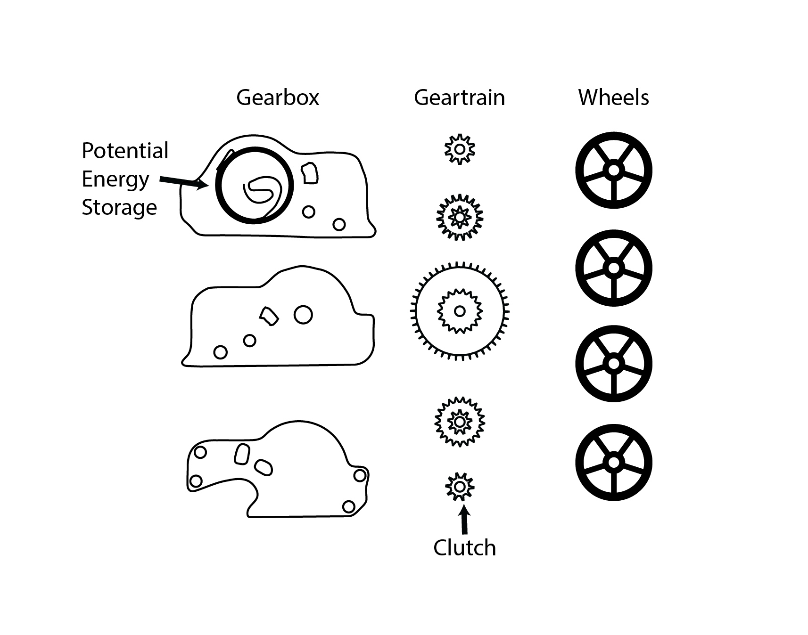
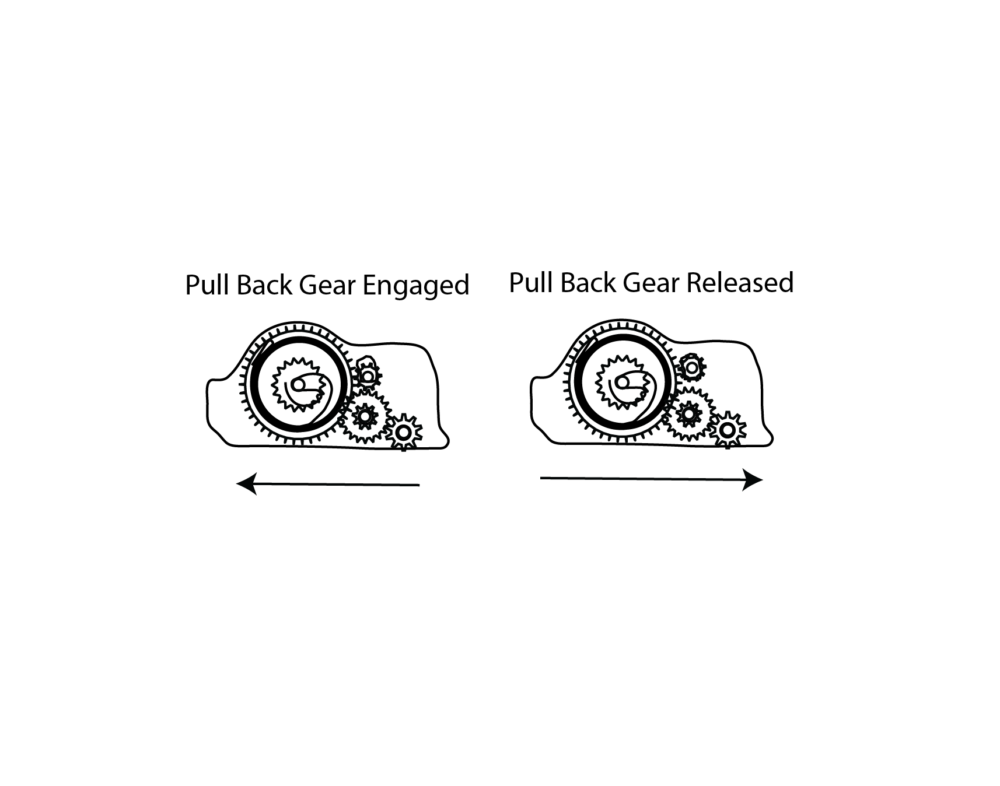

Week 2: Toy Movement Study
I dissembled velocicar's gearbox to see how it makes the pullback wind the mainspring and release it when winded forward. It was difficult because I had to drill out the plastic rivets. The injection molded gears were tightly packed inside the small black plastic manifold, which was injection molded as well.
I had some trouble reconstructing the mechanism, but the essential movement which happens is in the clutch gear which disengages to allow the gearbox to pull back a shorter amount than it goes forward.
